OBRUK
Publications
Magazine issues, congress papers, posters and press coverage.
Papers and posters
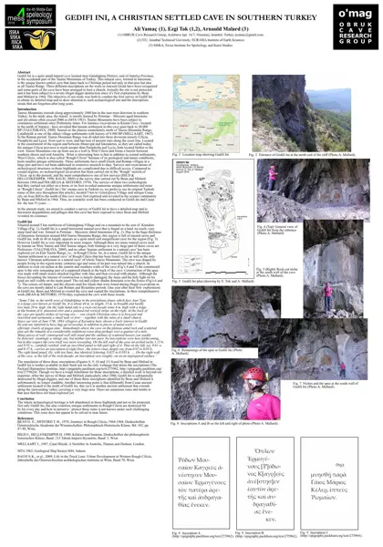
Gedifi İni
PDF · 1,7 MB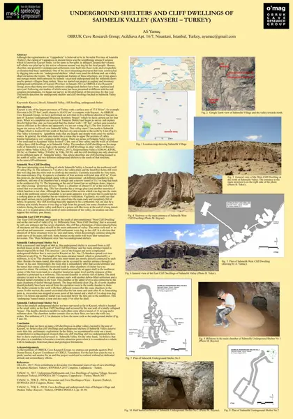
Şahmelik
PDF · 1,4 MB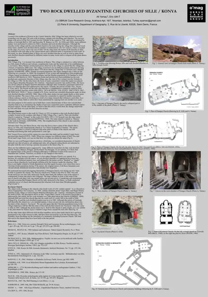
Sille
PDF · 1,3 MB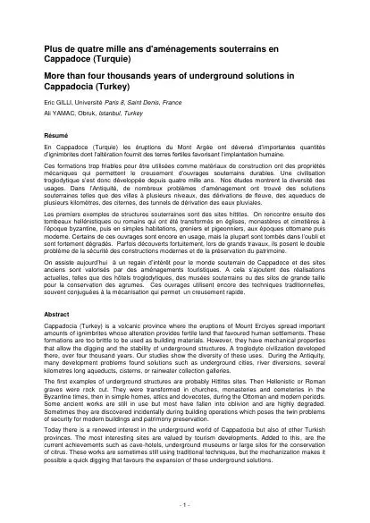
Cappadoce
PDF · 0,2 MB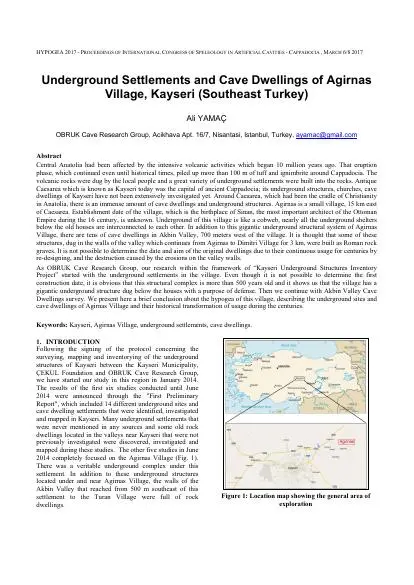
Ağırnas Underground City
PDF · 0,5 MB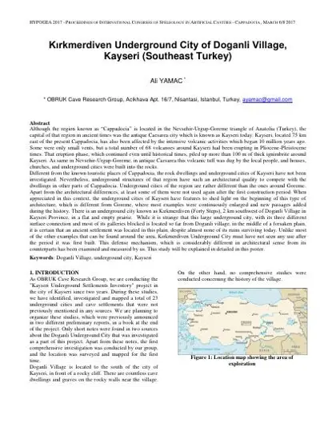
Doğanlı Underground City
PDF · 0,2 MB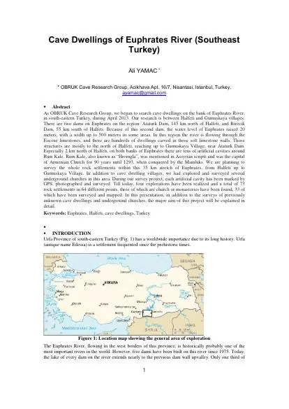
Cave Dwellings along the Euphrates River
PDF · 0,3 MB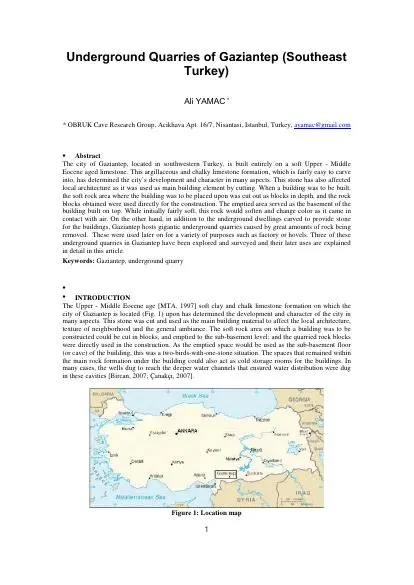
Underground Quarries of Gaziantep
PDF · 0,2 MB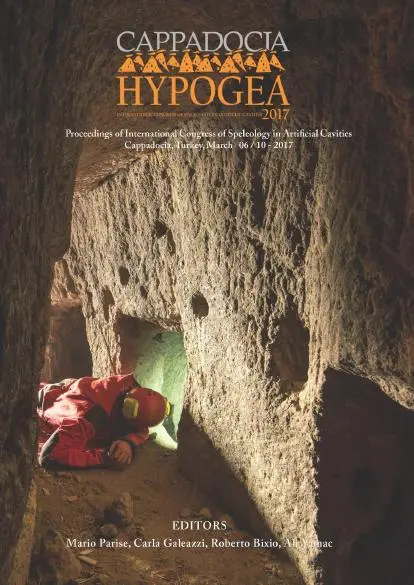
Hypogea 2017 Bildiriler Kitabı
PDF · 29,8 MB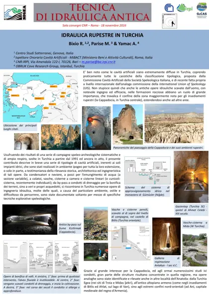
SIGEA Posteri
PDF · 0,9 MB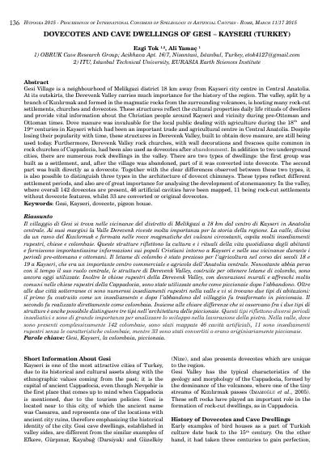
Underground Structures of Gesi
PDF · 0,3 MB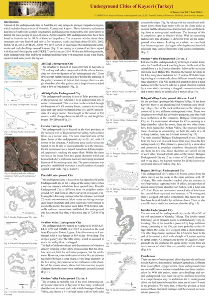
Underground Structures of Kayseri
PDF · 0,7 MB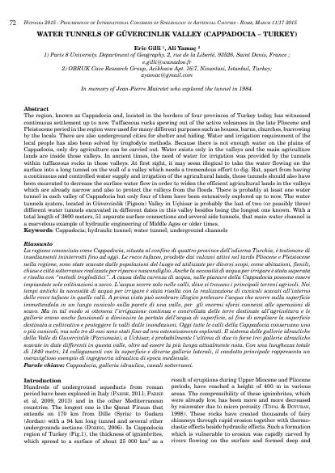
Güvercinlik Valley
PDF · 0,3 MB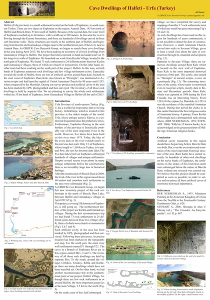
Rock-cut Structures of Halfeti
PDF · 1,3 MB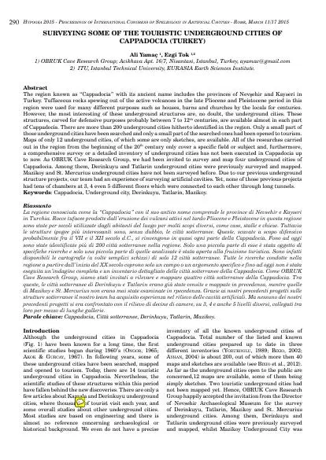
Cappadocia (Yamaç & Tok)
PDF · 0,4 MB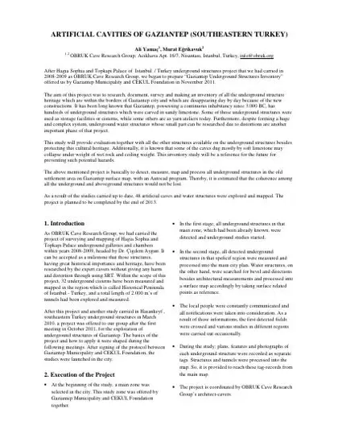
Artificial Cavities of Gaziantep
PDF · 0,2 MB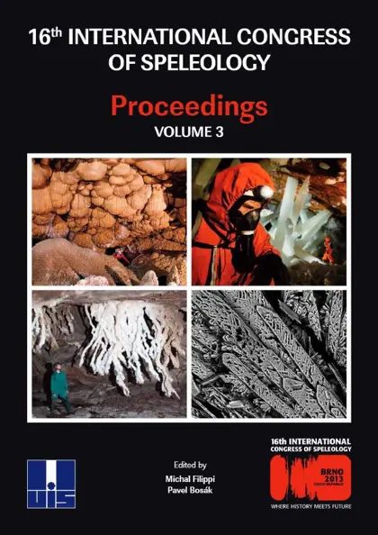
Keş Mountain Sinkhole
PDF · 0,3 MB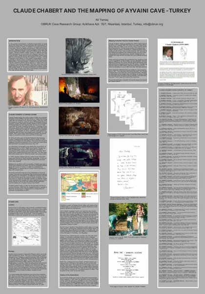
Claude Chabert, Ayvaini Cave
PDF · 0,9 MB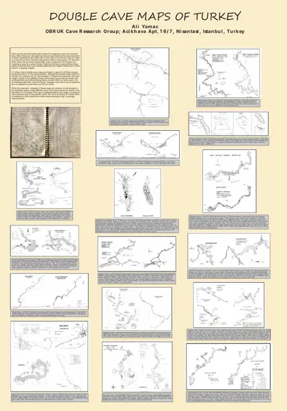
Double Cave Maps of Turkey
PDF · 1,1 MB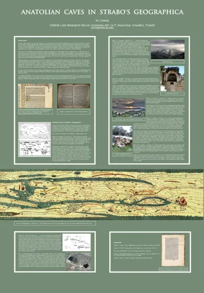
Anatolian Caves in Strabo's Geographica
PDF · 0,7 MB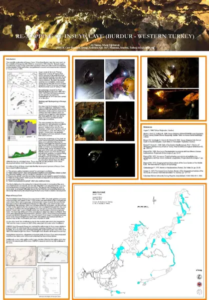
Remapping of Insuyu Cave
PDF · 0,7 MB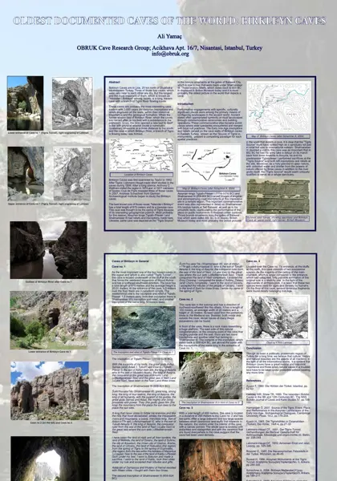
Oldest Documented Caves of the World: Birkleyn Caves
PDF · 1,9 MB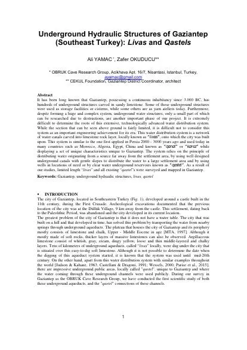
Underground Hydraulic Structures of Gaziantep
PDF · 0,3 MB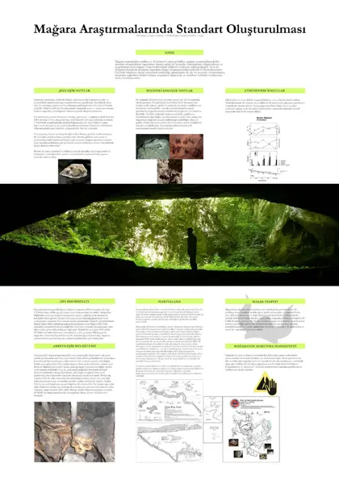
Mağara Araştırmalarında Standart Oluşturulması
PDF · 0,8 MB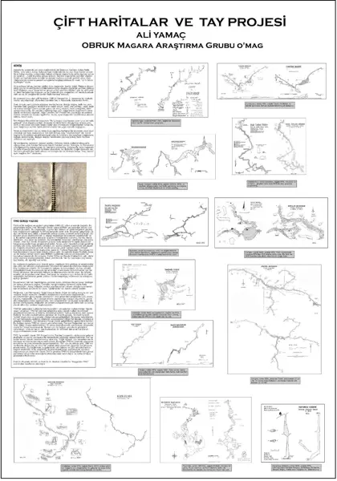
Çift Haritalar ve TAY Projesi
PDF · 0,8 MB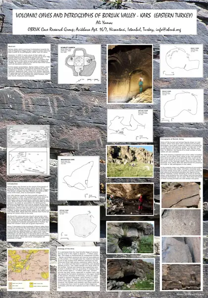
Kars Borluk Vadisi Mağaraları
PDF · 2,0 MB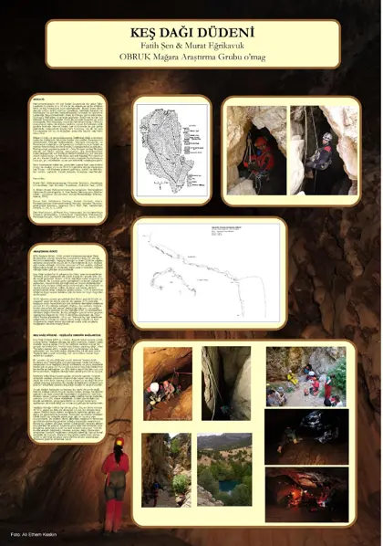
Keş Dağı Düdeni
PDF · 0,9 MB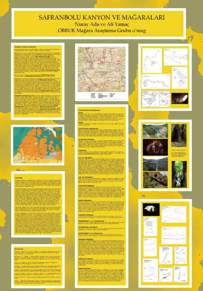
Safranbolu Kanyon ve Mağaraları
PDF · 1,1 MB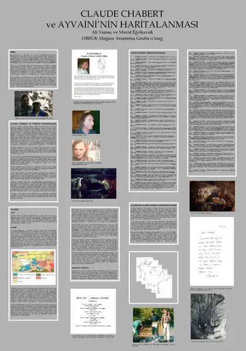
Claude Chabert ve Ayvaini
PDF · 1,0 MB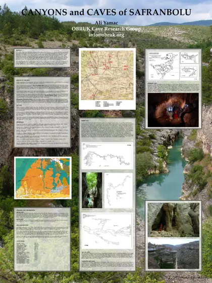
Canyons and Caves of Safranbolu
PDF · 1,7 MBIn the press
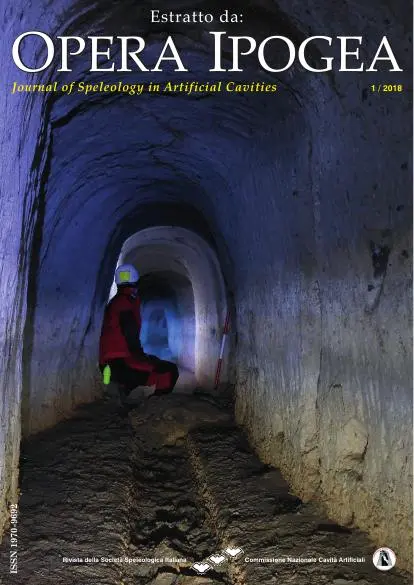
Tomarza
PDF · 2,9 MB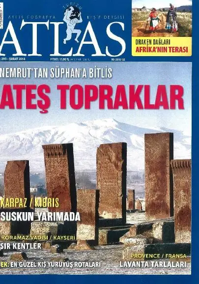
Koramaz Vadisi
PDF · 2,0 MB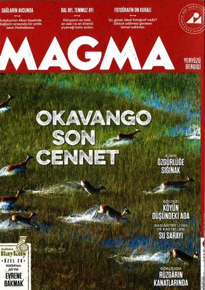
Gaziantep
PDF · 2,8 MB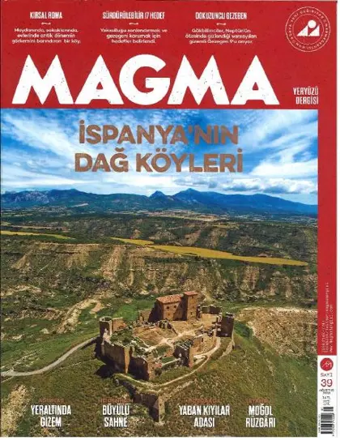
Ağırnas
PDF · 1,9 MB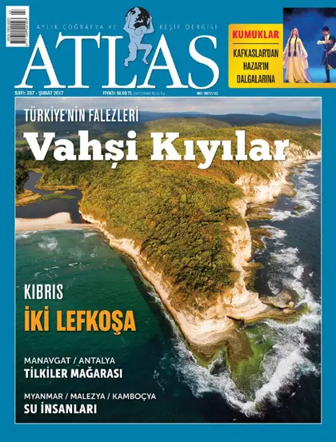
Tilkiler Mağarası
PDF · 2,2 MB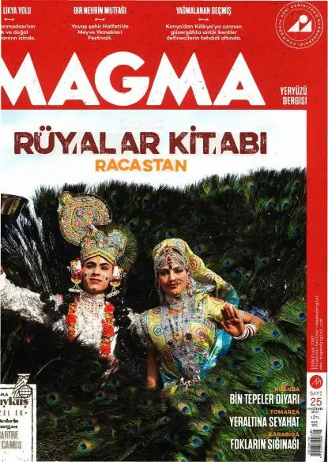
Tomarza
PDF · 7,4 MB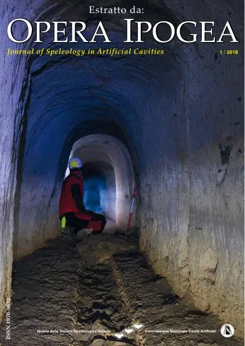
Doğanlı
PDF · 1,4 MB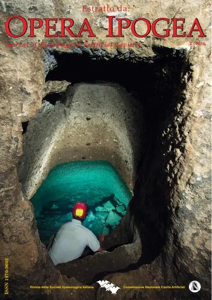
Mimar Sinan
PDF · 1,3 MB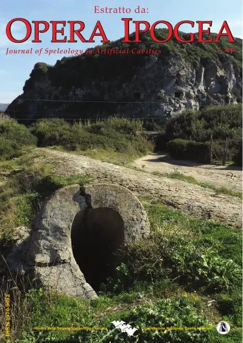
Golgoli
PDF · 1,3 MB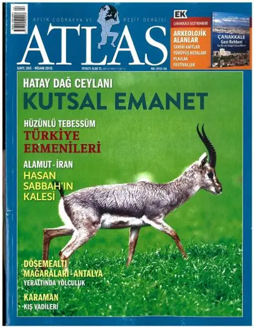
Döşemealtı
PDF · 6,3 MB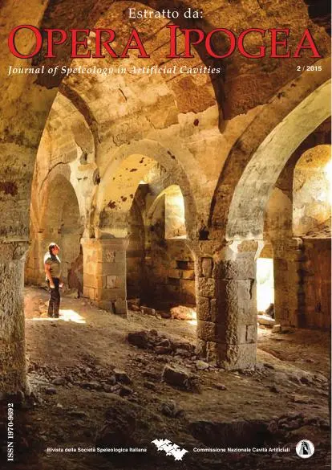
Belağası
PDF · 1,6 MB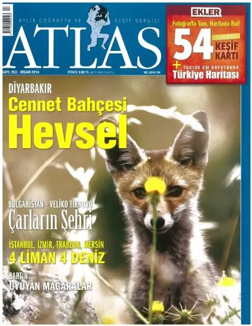
Amasra Mağaraları
PDF · 2,6 MB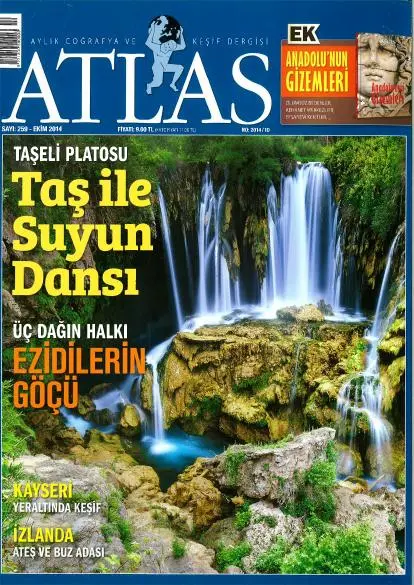
Kayseri Eki
PDF · 6,8 MBHalfeti
PDF · 2,8 MBGaziantep Projesi
PDF · 3,1 MBGaziantep'in Altı
PDF · 1,7 MBGaziantep Projesi
PDF · 1,4 MBKeş Dağı Düdeni
PDF · 2,5 MBKeş Dağı Düdeni
PDF · 0,6 MBAyasofya'nın Altında
PDF · 0,6 MBKüre Dağları
PDF · 0,0 MBKüre
PDF · 2,3 MBHasankeyf
PDF · 2,7 MBKırkgözler
PDF · 1,1 MBYeşilgöz
PDF · 2,8 MBRöportaj
PDF · 0,4 MBOther publications
OBRUK 2010–2014 çalışmaları
PDF · 0,6 MB
Çift Haritalar
PDF · 2,6 MBYerin Altındaki Şehir
PDF · 3,2 MBMimar Sinan Underground City
PDF · 1,5 MBKırkmerdiven Underground City
PDF · 0,2 MB